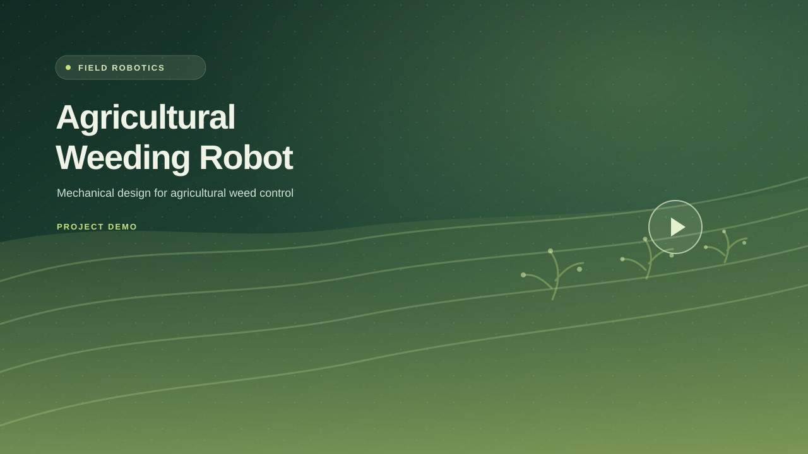

Design mechanisms
Develop linkages, toolheads, housings and assemblies around the task they need to perform.
Robotics EngineerMechanical Design & Integration
I design, build and validate mechanisms for agricultural, rehabilitation and underwater robots, from component selection through prototyping, integration and testing.

From mechanism design and fabrication to integration and hardware validation.

I am a robotics engineer with a mechanical engineering background. My work spans agricultural toolheads, parallel mechanisms for rehabilitation, and underwater robotic systems.
I work across CAD, component selection, drawings, workshop fabrication, mechatronics integration and test. I enjoy solving the mechanical details that make a prototype reliable and practical to use.
A practical toolkit for mechanisms, prototypes, integration and validation.
Develop linkages, toolheads, housings and assemblies around the task they need to perform.
Move from CAD to parts with clear drawings, practical tolerances and coordinated production.
Bring mechanical assemblies together with motors, feedback, electronics and robot software.
Check accuracy, stiffness, repeatability and environmental protection under real conditions.
Robotic systems I have designed, built, integrated or tested.

I designed and tested a five-bar robot for rehabilitation research, verifying positioning accuracy to ±0.5 mm.
View Project
I developed underwater robot mechanisms and housings, then tested sealing and durability in demanding conditions.
View Project
Engineered an exoskeleton prototype for studying hamstring muscle mechanics and enhancing sports injury rehabilitation.
View Project
Developed an AI-based vision system for autonomous underwater vehicles to detect, classify, and track various fish species in real-time.
View Project
I designed 2-DOF weeding toolheads and a quick-release mounting system for agricultural crop beds.
View ProjectMechanical design, robotics research and field-oriented system development.
BOTany Aalborg, Denmark
Aalborg University Aalborg, Denmark
Cyprus Robotics / Ara Robotics Famagusta, Cyprus
2023 – 2026
Aalborg University, Denmark
Non-linear control and multi-body systems2015 – 2020
Dokuz Eylül University, Turkey
Thesis: design and control of two-axis solar tracking mechanismsLed a five-person cross-disciplinary robotics team; delivered three prototypes over a nine-month competition cycle.
EU Graduate Studies Scholarship recipient; Huawei DIGIX 2020 regional third place.
Peer-reviewed research and technical work.
Co-authored research detailing the design of variable stiffness actuators for planar robots, focusing on innovative mechanism design and stiffness modeling approaches.
Read PublicationThis project focuses on a practical comparison between the MEKF and the Additive Extended Kalman Filter in satellite attitude estimation.
Read PublicationGet in touch about robotics, mechanical design or collaboration.